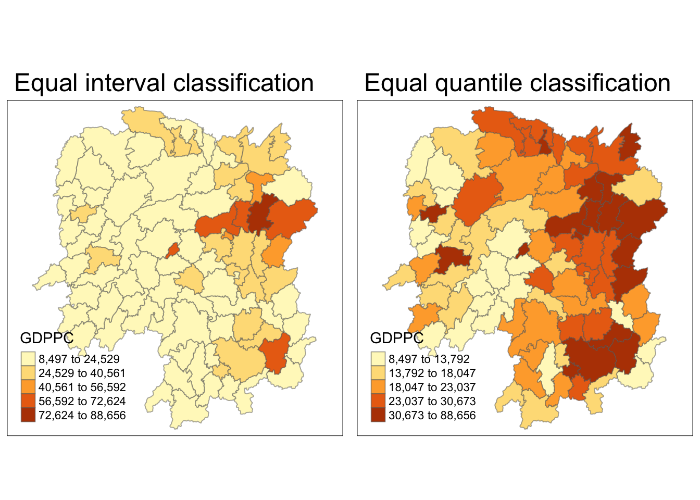
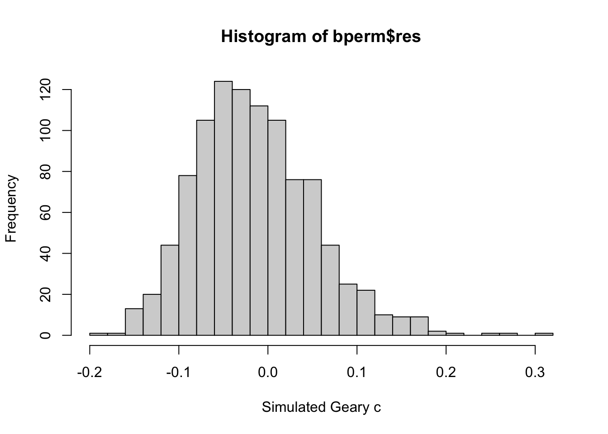

pacman::p_load(sf, spdep, tmap, tidyverse)Exercise 2B: Global Measures of Spatial Autocorrelation
1. Getting Started
1.1 Install and launching R packages
The code chunk below uses p_load() of pacman package to check if sf, spdep, tmap, and tidyverse packages are installed into the R environment. If they are, then they will be launched into R.
1.2 Importing the OD data
We will be using two data sets for this exercise. Data were retrieved on 19th Nov 2023. They are :
- Hunan country boundary layer*. (data is in ESRI shapefile format) - Geospatial data
- Hunan_2012.csv*. (data is in csv file) - Attribute table
In this exercise, we are interested to examine the spatial pattern of GDPPC (a.k.a GPD per Capital) of Hunan Provice, People Republic of China.
1.2.1 Importing Hunan country boundary layer
The code chunk below uses st_read() of sf package to import the 1st data set into R. The imported shapefile will be simple features object of sf.
hunan <- st_read(dsn = "data/geospatial",
layer = "Hunan")Reading layer `Hunan' from data source
`/Users/smu/Rworkshop/jiawenoh/ISSS624/Hands-on_Ex/Hands-on_Ex02/data/geospatial'
using driver `ESRI Shapefile'
Simple feature collection with 88 features and 7 fields
Geometry type: POLYGON
Dimension: XY
Bounding box: xmin: 108.7831 ymin: 24.6342 xmax: 114.2544 ymax: 30.12812
Geodetic CRS: WGS 841.2.2 Importing Hunan_2012.csv
Next, we will import the 2nd dataset (csv) into R. We will use read_csv() of readr package. The output is in R dataframe class.
hunan2012 <- read_csv("data/aspatial/Hunan_2012.csv")1.3 Performing relational join
After importing, we will update the attribute table of hunan’s Spatial Polygons Data Frame with the attribute fields of hunan2012 dataframe. We will performed a left_join() with the aid of dplyr package.
hunan <- left_join(hunan,hunan2012) %>%
select(1:4,7,15)We will be joining both tables by County. By doing the left_join, we will combined the 8 variables from hunan, with 29 variables from hunan2012 and uses select() to filter for the variables that we are interested in.
1.4 Visualising Regional Development Indicator
After joining, we will do a quick visualization. We will be using the qtm() of tmap package to prepare a basemap and a choropleth map to see the distribution of GDPPC 2012.
Show the code
equal <- tm_shape(hunan) +
tm_fill("GDPPC",
n = 5,
style = "equal") +
tm_borders(alpha = 0.5) +
tm_layout(main.title = "Equal interval classification")
quantile <- tm_shape(hunan) +
tm_fill("GDPPC",
n = 5,
style = "quantile") +
tm_borders(alpha = 0.5) +
tm_layout(main.title = "Equal quantile classification")
tmap_arrange(equal,
quantile,
asp=1,
ncol=2)
2. Global Spatial Autocorrelation
In this section, we will compute global spatial autocorrelation statistics and to perform spatial complete randomness test for global spatial autocorrelation.
2.1 Computing Contiguity Spatial Weights
To begin with, we are require to construct a spatial weights of the study area. The spatial weights is used to define the neighborhood relationships between the geographical units (i.e. county) in the study area. We will be using poly2nb() of spdep package to compute QUEEN contiguity weight matrices for the study area.
wm_q <- poly2nb(hunan,
queen=TRUE)
summary(wm_q)Neighbour list object:
Number of regions: 88
Number of nonzero links: 448
Percentage nonzero weights: 5.785124
Average number of links: 5.090909
Link number distribution:
1 2 3 4 5 6 7 8 9 11
2 2 12 16 24 14 11 4 2 1
2 least connected regions:
30 65 with 1 link
1 most connected region:
85 with 11 linksObservations:
Summary report highlights 88 area units in Hunan.
1 most connected region with 11 neighbors, and
2 least connected regions with only 1 neighbor.
2.2 Row-standardised weights matrix
Next, we would need to assign weights to each neighboring polygon. Weights are assigned based on the fraction of 1/#no.of neighbors to each neighboring country then summing the weighted income values.
For the example below, we will used style = ‘W’ option (note: there are robust options available). By adding ’Zero.police = TRUE’, we are allowing list of non-neighbors.
rswm_q <- nb2listw(wm_q,
style="W",
zero.policy = TRUE)
rswm_qCharacteristics of weights list object:
Neighbour list object:
Number of regions: 88
Number of nonzero links: 448
Percentage nonzero weights: 5.785124
Average number of links: 5.090909
Weights style: W
Weights constants summary:
n nn S0 S1 S2
W 88 7744 88 37.86334 365.9147
Note about
nb2listw()
nb2listw() has two major arguments, namely style and zero.policy.
There are 6 Styles, namely:
“W” : row standardize (sum over all links to n)
“B” : basic binary coding
“C” : globally standardised (sum over all links to n)
“U” : is equal to C divided by the number of neighbors (sum over all links to unity)
“minmax” : the min, and max
“S” : variance-stabilizing coding scheme
The default setting for zero.policy:
‘NULL’ : (default), uses global option value
‘TRUE’ : permit the weights list to be formed with zero-length weights vectors
‘FALSE’ : stop with error for any empty neighbors sets
Refer here for more information.
2.3 Moran’s I Statistics test
There are two tests that we could perform. In this section, we will cover the Moran’s I test. We will be using moran.test() of spdep to perform the statistical test.
We will perform Moran’s I statistical testing using moran.test() of spdep:
Show the code
moran.test(hunan$GDPPC,
listw=rswm_q,
zero.policy = TRUE,
na.action=na.omit)
Moran I test under randomisation
data: hunan$GDPPC
weights: rswm_q
Moran I statistic standard deviate = 4.7351, p-value = 1.095e-06
alternative hypothesis: greater
sample estimates:
Moran I statistic Expectation Variance
0.300749970 -0.011494253 0.004348351 As observed, we can reject the null hypothesis (Ho) as the p-value is smaller than the alpha value.
We will perform permutation test for Moran’s statistic by using moran.mc() of spdep. A total of 1000 simulation will be performed:
Show the code
set.seed(1234)
bperm= moran.mc(hunan$GDPPC,
listw=rswm_q,
nsim=999,
zero.policy = TRUE,
na.action=na.omit)
bperm
Monte-Carlo simulation of Moran I
data: hunan$GDPPC
weights: rswm_q
number of simulations + 1: 1000
statistic = 0.30075, observed rank = 1000, p-value = 0.001
alternative hypothesis: greaterAs observed, we can reject the null hypothesis (Ho) as the p-value is smaller than the alpha value.
We will be examining the simulated Moran’s I test statistic by plotting the distribution of the statistical values through a histogram:
Show the code
#print mean
cat('The mean is:', mean(bperm$res[1:999]),'\n')The mean is: -0.01504572 Show the code
#print variance
cat('The variance is:', var(bperm$res[1:999]), '\n')The variance is: 0.004371574 Show the code
#print summary
cat('Summary Report\n')Summary ReportShow the code
summary(bperm$res[1:999]) Min. 1st Qu. Median Mean 3rd Qu. Max.
-0.18339 -0.06168 -0.02125 -0.01505 0.02611 0.27593 Show the code
hist(bperm$res,
freq=TRUE,
breaks=20,
xlab="Simulated Moran's I")
abline(v=0,
col="red") 
2.4 Geary’s Statistics Test
In this section, we will cover the Geary’s C test. We will be using geary.test() of spdep to perform the statistical test.
We will perform Geary’s C statistical testing using geary.test() of spdep:
Show the code
geary.test(hunan$GDPPC, listw=rswm_q)
Geary C test under randomisation
data: hunan$GDPPC
weights: rswm_q
Geary C statistic standard deviate = 3.6108, p-value = 0.0001526
alternative hypothesis: Expectation greater than statistic
sample estimates:
Geary C statistic Expectation Variance
0.6907223 1.0000000 0.0073364 We will perform permutation test for Geary’s statistic by using geary.mc() of spdep. A total of 1000 simulation will be performed:
Show the code
set.seed(1234)
gperm=geary.mc(hunan$GDPPC,
listw=rswm_q,
nsim=999)
gperm
Monte-Carlo simulation of Geary C
data: hunan$GDPPC
weights: rswm_q
number of simulations + 1: 1000
statistic = 0.69072, observed rank = 1, p-value = 0.001
alternative hypothesis: greaterWe will be examining the simulated Geary’s C test statistic by plotting the distribution of the statistical values through a histogram:
Show the code
#print mean
cat('The mean is:', mean(gperm$res[1:999]),'\n')The mean is: 1.004402 Show the code
#print variance
cat('The variance is:', var(gperm$res[1:999]), '\n')The variance is: 0.007436493 Show the code
#print summary
cat('Summary Report\n')Summary ReportShow the code
summary(gperm$res[1:999]) Min. 1st Qu. Median Mean 3rd Qu. Max.
0.7142 0.9502 1.0052 1.0044 1.0595 1.2722 Show the code
hist(bperm$res, freq=TRUE, breaks=20, xlab="Simulated Geary c")
abline(v=1, col="red") 
3. Spatial Correlogram
In this section, we will use sp.correlogram() of spdep package to compute a 6-lag spatial correlogram of GDPPC.
3.1 Compute Moran’s I correlogram
The global spatial autocorrelation used in Moran’s I. For the graph, we will use plot() of base graph.
Show the code
MI_corr <- sp.correlogram(wm_q,
hunan$GDPPC,
order=6,
method="I",
style="W")
plot(MI_corr)
To get a better interpretation of the output, we can examine the full analysis by printing the results.
print(MI_corr)Spatial correlogram for hunan$GDPPC
method: Moran's I
estimate expectation variance standard deviate Pr(I) two sided
1 (88) 0.3007500 -0.0114943 0.0043484 4.7351 2.189e-06 ***
2 (88) 0.2060084 -0.0114943 0.0020962 4.7505 2.029e-06 ***
3 (88) 0.0668273 -0.0114943 0.0014602 2.0496 0.040400 *
4 (88) 0.0299470 -0.0114943 0.0011717 1.2107 0.226015
5 (88) -0.1530471 -0.0114943 0.0012440 -4.0134 5.984e-05 ***
6 (88) -0.1187070 -0.0114943 0.0016791 -2.6164 0.008886 **
---
Signif. codes: 0 '***' 0.001 '**' 0.01 '*' 0.05 '.' 0.1 ' ' 13.2 Compute Geary’s C correlogram
The global spatial autocorrelation used in Geary’s C. For the graph, we will use plot() of base graph.
Show the code
GC_corr <- sp.correlogram(wm_q,
hunan$GDPPC,
order=6,
method="C",
style="W")
plot(GC_corr)
To get a better analysis,
print(GC_corr)Spatial correlogram for hunan$GDPPC
method: Geary's C
estimate expectation variance standard deviate Pr(I) two sided
1 (88) 0.6907223 1.0000000 0.0073364 -3.6108 0.0003052 ***
2 (88) 0.7630197 1.0000000 0.0049126 -3.3811 0.0007220 ***
3 (88) 0.9397299 1.0000000 0.0049005 -0.8610 0.3892612
4 (88) 1.0098462 1.0000000 0.0039631 0.1564 0.8757128
5 (88) 1.2008204 1.0000000 0.0035568 3.3673 0.0007592 ***
6 (88) 1.0773386 1.0000000 0.0058042 1.0151 0.3100407
---
Signif. codes: 0 '***' 0.001 '**' 0.01 '*' 0.05 '.' 0.1 ' ' 1